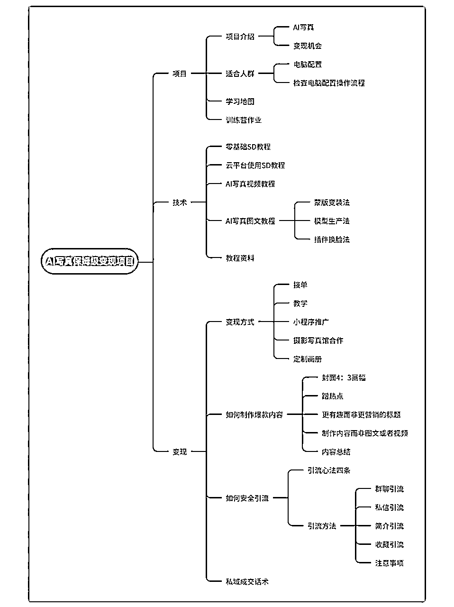
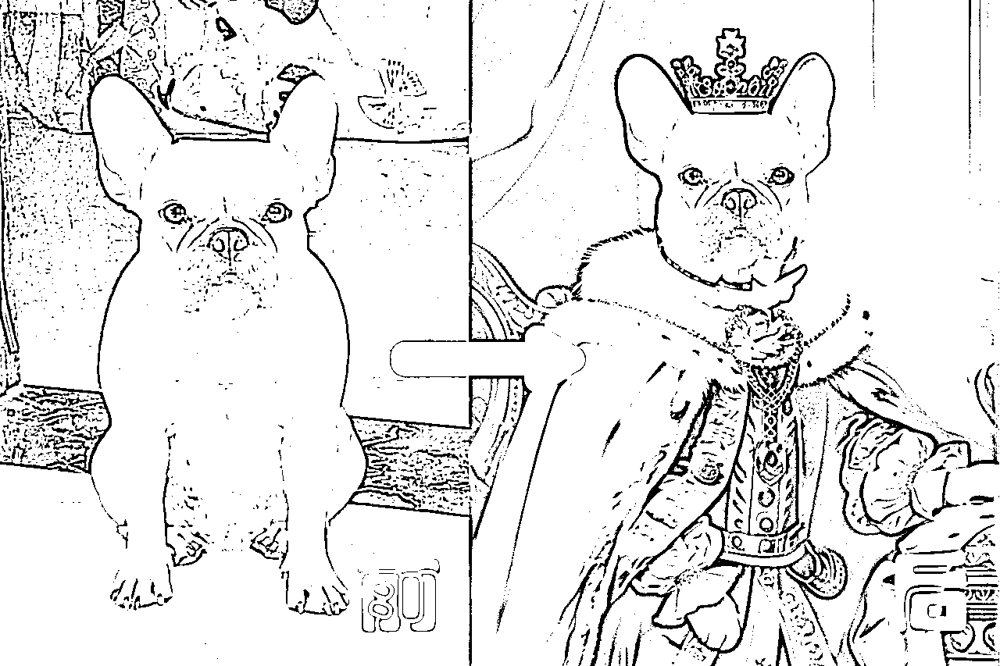
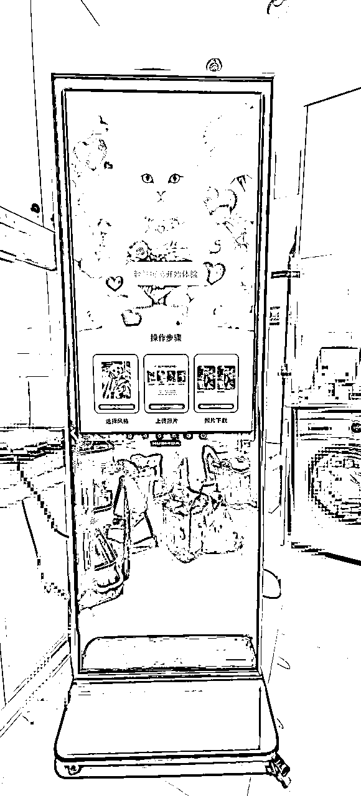
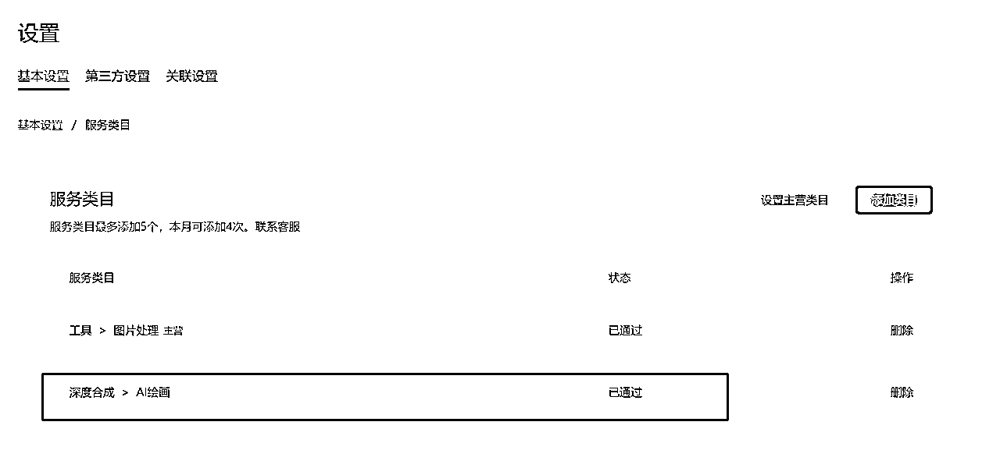

来源：https://h0v0176ep4x.feishu.cn/docx/XeJ1d8QAYon2OtxwIvacXLIln8g
三年前因为完全看懂了公司的业务逻辑，出于对自己技术的自信，于是和同事一起创立了自己的公司，由我负责研发，他负责流量。在开发了多款软件后，我们终于迎来了部分项目的流量爆发，后台用户数量稳步攀升。
我当时全天只休息四个小时，不停的开发APP，开发了包括短剧、社交、工具类等十几款APP，并成功上架应用市场。后来随着业务逐渐稳定，APP流量增长遭遇瓶颈，开始寻找新的赛道。
这些都是之前开发的APP
AI一直是我关注的焦点。早期GPT问世时，我曾通过帮助用户注册账号引发流量热潮，这也算是延续了我们之间的缘分。
同时，我也看到了一些公众号分享的AI线下落地成功案例，恰好最近比较空闲，便决定尝试一番。
我考察了杭州的几个夜市，最终选择了武林夜市，因为它离我住的地方近，且是杭州最大的夜市。我与夜市达成合作，拿下了一个合作点
起初，我对AI知之甚少，使用的是第三方软件进行人像写真。现场拍照后，帮助用户生成美美的照片。理想很丰满，现实却很骨感。我准备了打印机、相框，并定价19.9元一张6寸照片加相框时，发现虽然围观和体验的人多，但真正愿意付费的人却寥寥无几。
当需要真金白银付费时，人们的谨慎态度让我意识到，现实与网络上AI的热闹截然不同。即便我只收19.9元并送相框，仍然鲜有人问津。大多数人看到AI写真后，直言抖音上就有，这里为何还要付费。少数人尝试后，反馈不像、不好看，然后转身离去。结果，软件使用费花了不少，却没卖出去多少，挫败感油然而生，与我想象中的AI引爆市场大相径庭。我相信，线下的反馈才是最真实的声音。
到底哪里出了问题？
实践发现AI写真真正的客户并不是年轻女性，反而是上了年纪的阿姨们，她们愿意尝试，有些觉得满意就会付费，而年轻人一看是AI大部分都是掉头就走，这点和短视频上的宣传完全不一样
相比于AI在线上的火热，线下实操后发现情况截然不同，甚至AI都变成了一个负面词汇。很多人路过时，我都能听到他们议论：“这里怎么还有AI啊，抖音快手也能做啊。”看到招牌上有AI，他们甚至不愿意过来看一看。后来，我只好把AI遮住，反而有人好奇地过来看看是做什么的。普通人并不关心你的产品是否由AI制作，他们只关心你能给他们带来什么结果。
武林夜市是杭州最大的夜市，人流量每天上万不止，但这并不意味着什么都能卖出去，这边最流行的口头禅就是“有人流，不停留”，当时我还不知道这是什么意思。经过几个月与这边摊主的交流，发现今年生意并不好，文创类产品连续几天没开单都很正常。夜市的人流并不意味着生意，加上今年经济形势不好，大家消费都很谨慎。有个大哥跟我说，去年一个月营业额有三万，今年半个月过去了目前就6000。有时情况比较搞笑，我当天营业额不到100，却成为了附近的销冠。所以，除了做吃的，文创类的摊位摊主在不断更换，市场并没有看上去那么好做。
由于长期在线上工作，我没想到线下的实体经济已经到了这种程度。之前一直埋头干开发，对市场的敏感度确实过于停留在纸面上。
当时为了学习AI，花费了大量的学费，SD、Comfyui都研究学习了一遍。首先，课程确实教了一些东西，但如果说按网络上的描述用comfyui躺着就能赚钱，这种说法根本站不住脚。我能继续下去，是因为我利用这些知识，结合自身的优势能自己开发软件，将出图效率和成本优化到极致。如果只会工作流和使用别人的软件，别说软件的使用费了，前期手动处理图片的工作量之大，也足以令人筋疲力尽，所谓的自动化出图根本不可能（当然，后期我通过自研软件已经做到了全自动出图）。刚开始我用工作流出图，在服务器之间不停切换出图，眼睛差点看废；还有用户给你的原图很多是不能直接交给AI的，图片是需要人工预处理的，甚至出图之后还需要PS再精修一下，在线下这种需要快速交付的场景下，这种是极不合理的。

这样的情况持续了大概三天，我决定不能坐以待毙，尝试更换方向。开始摆上儿童AI写真，宠物守护神，宠物肖像等
儿童AI写真：有家长过来咨询过，也尝试了一下，反馈和孩子不像，要么就是出图后表情僵硬，效果一般，市场还是不认可，而且家长是真正付费方，孩子哪怕脸上少了一颗痣都觉得不像，最后基本就是试了但最后不买单

宠物守护神：有噱头，能吸引到人，但事实上没做几单，因为这个对人和宠物的照片要求比较严格，人物是需要和宠物有一个互动才能有较好的合成效果，很多客户手机没合适照片，或者就是有照片了，但是这个处理会比较费时间，需要对宠物和人像都进行抠图处理，然后用Comfyui工作流跑图，然后需要让客户满意的话，需要跑多次才行，成交的时间被无限拉长，这个不适合线下这种有时间限制的场合，遂放弃
Comfyui跑图存在随机性，无法在短时间内作出让用户满意的图，网上说的comfyui跑图躺着赚钱纯纯坑小白
宠物肖像：这个之前不看好，因为技术相对简单，效果也一般，结果恰恰这个反馈最好，感觉自己是犯了技术人员的通病，只追究极限的技术和极致的效果，忽略了市场真正的需要。因为技术简单所以出图反而快，可以短时间内出多张图让用户挑选，只要有一张用户满意就能成交，成交时长大大缩短。于是决定Allin这个赛道，开始准备宣传物料，然后开始开发相关软件，后期用自研的软件，不需要在算力服务器上反复切换工作流，我一般后台配置5台算力服务器，后期用自研的程序1分钟就能出十张图

有了软件之后出图效率大幅提高，营业额也终于有了突破，但是再高就出现天花板了，线下时间有限，做图数量是有极限的，于是开始思考能不能把这个流程提取出来，完全用程序全部自动化，做一个小程序的想法由此而来
为什么做小程序，而不是自己更擅长的Android APP，首先是这个功能相对简单，其次多年的安卓开发经验我知道，开发容易传播难，用户下载APP安装的成本高，不容易转发传播，而且做了安卓那苹果用户怎么办，总不能再开发一个吧，微信小程序打开便捷，传播方便，很多宠物主都有群，只要他们满意群里一转发，就能很容易传播
首先重新设计宣传物料
这个过程中夜市负责人觉得AI这个品类比较新颖，还给我调整了位置，就在武林夜市打卡点旁边，妥妥的C位
第一步 先开发一款专门在夜市使用的软件
要求就是百分百为夜市这个场景开发，最简单的步骤，最快的速度出图即可，界面美观度完全不考虑
以下是软件的实际使用图
现场使用场景
第二步 开发小程序
第一步所有技术验证后就可以开发普通用户版本，不能仅仅只局限于夜市之中，于是开始设计原型图，找之前的UI设计师出效果图
第三步 开发一体机
这个技术没什么难度，所谓的一体机就是一个大号的安卓手机，反而更简单，就是我的强项，市面上现在一台AI拍照机起步就要大几万，实际机器成本才几千，这个如果能卖出去也是一笔很大的收入，一体机的设计也很快做完了

一体机原型运行图
1、对小程序不熟悉，没开发过怎么快速开发一款商用产品？
我本身是安卓程序员出身，对微信小程序的代码并不熟悉，一开始看微信的官方文档，官方课堂，发现知识点分散几天不得要领，最后还是去花钱买了课系统的学习才算入门，后期一边实践，有问题问AI，基本开发过程中的问题就都慢慢解决了
2、前端安卓怎么搞定后台开发？
这个问题反而好解决，因为之前就独立开发了多个项目，所以后台服务器接口开发，数据库搭建，对象存储，已经有了成熟的方案，只是微信小程序的api接口必须全部支持https，就这个花了点精力，最后在淘宝买个https证书解决
3、最大的问题，如何解决算力服务器的算力分配？
首先确定的是使用仙宫云做算力服务器，当我一个人使用可以一直开着，不用了手动关掉。但是当用户数量增多，高峰时期服务器一台是不够用的，夜晚人少的时候全开着又浪费，市面上找了一圈也找不到能提供动态算力的服务商
最终决定自己写一套算法来解决负载均衡的问题，目前的策略是当服务器闲置10分钟时自动关机，有用户时自动开机，用户数量增多时，增加服务器开机数量，算法检测到用户数量减少，通知服务器关机，动态去分配算力资源，最大限度节省算力成本
4、如何检测图片中宠物的面部？
因为宠物肖像这个的底层逻辑是抠取原图的宠物面部，然后让AI去融合最合适的场景，之前摆摊都是自己用PS抠图来做，现在做成软件需要自动处理，这里倒是用到了AI的图像识别技术，训练模型做了一套图像识别算法解决了这个问题，至此所有技术问题都已成功解决。
5、微信小程序上架问题
上架时碰到了AI算法需要备案的情况，如果自己做备案得花个大几万还搭上几个月的时间，后来在生财找到答案，直接用百度的AI算法去提测，顺利通过审核，成功上架微信小程序，AI宠物头像

小程序名称[AI宠物头像]
以上就是开发碰到的最大的五个问题，不过其他各种细节上的小问题每天都层出不穷，好在不是第一天创业这些都习惯了，总体还是比安卓开发问题少一点，毕竟安卓APP上架现在门槛越来越高了，小程序开发到上架这次一共花了20天时间，整体学习了小程序技术开发，而且有了这次积累的代码，以后再开发小程序效率还能再提高
反思：在原有业务增长停滞时，我急于拓展新业务。虽然通过多个渠道验证了项目的可靠性，但由于信息提供者的立场，我并未获得真实的反馈。这既有前期调研不足的原因，也有过于自信的问题。以后必须保持谦逊，向有结果的人学习，先复制成功模式，再寻求超越。
不过这次在线下和客户的一对一接触中，仍有不少收获。零距离的体验成交流程，和之前做APP时看统计数据里的下载量、启动次数、付费用户转化率，这些冰冷的数字相比，更加懂得了用户在面对付费场景时的真实心理，为后期线上项目的开发提供了理论依据，后期将全面转移到线上，结合自身优势用软件去继续放大项目收益。
摆摊过程中的趣事还有很多，有做一体写真机器来合作的，也有看到网红现场撒钱的，还有看到同行线上宣传做的热火朝天，我线下去考察，结果摊位空无一人的等等，篇幅有限就不一一讲了，有兴趣的可以私下交流